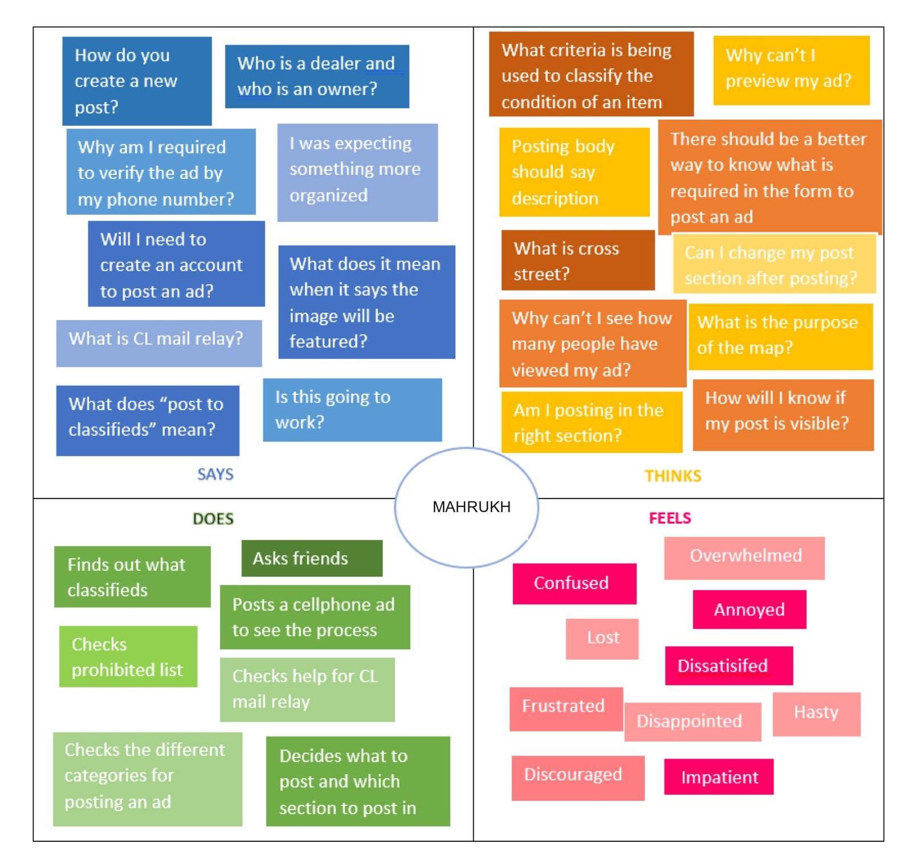
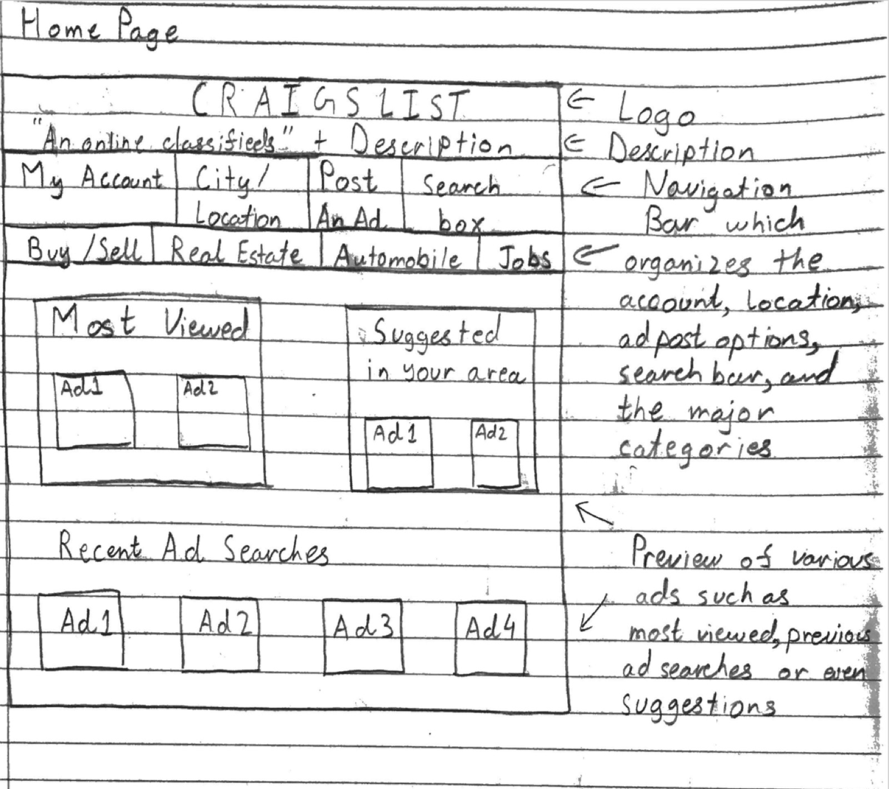
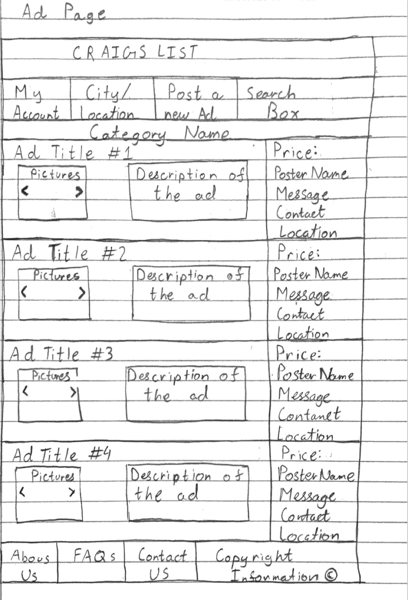
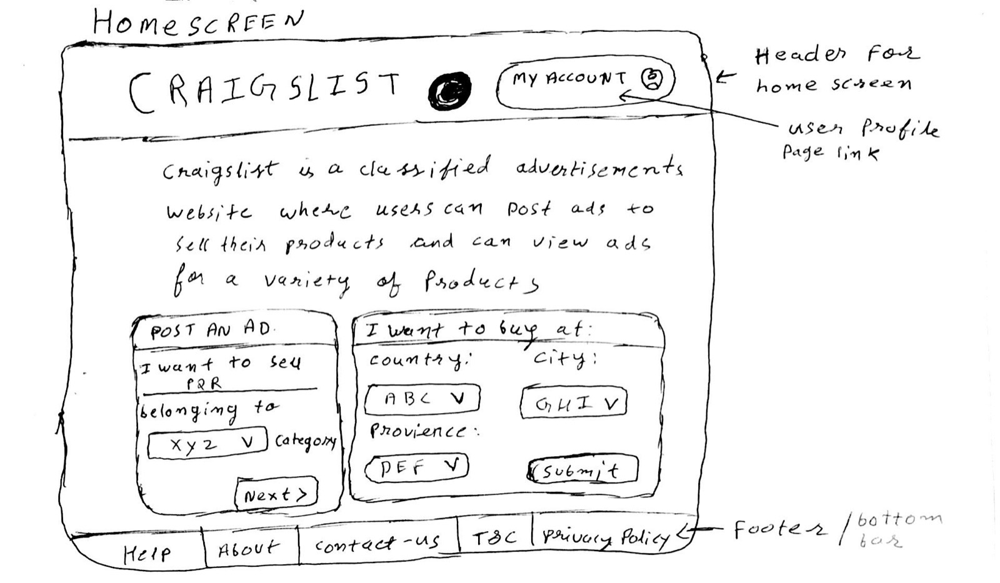
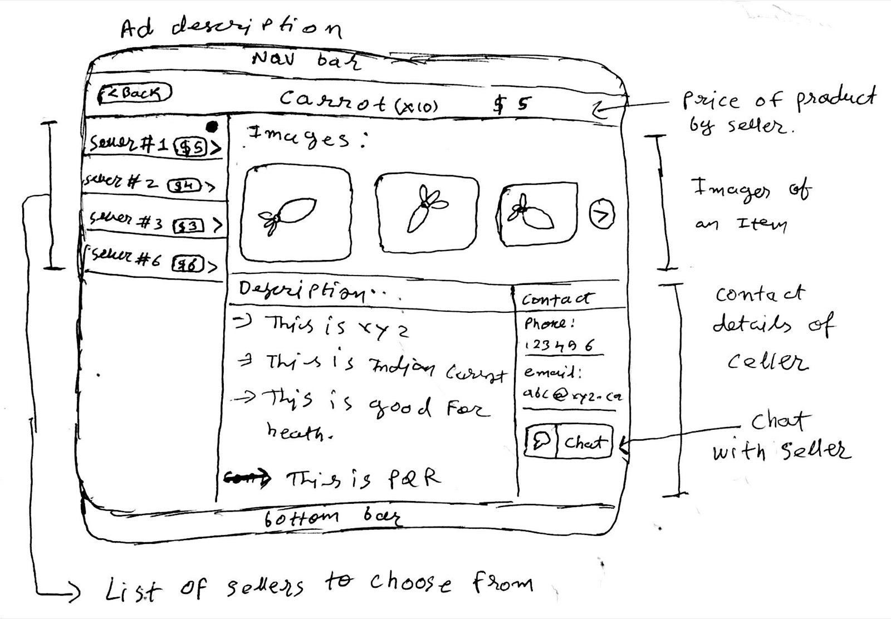

Earlier work · Human-computer interaction coursework
Redesigning Craigslist
Craigslist serves tens of millions of visits a month with an interface that has barely changed since the nineties. For my HCI course, four of us took it apart and rebuilt it around two competing design metaphors, prototyped on paper and tested with timed tasks.
- 4-person teamTwo competing design metaphors
- 4 user typesProfiled with empathy maps
- 12-question evaluationTimed tasks on both prototypes
Craigslist works and is miserable: cluttered, inconsistent, unclear to newcomers.
Analysed two core activities, profiled four user types, scored the requirements, prototyped the newspaper metaphor and wrote the evaluation.
Two lo-fi prototypes with iteration rationale and evaluation findings that fed back into both.
Why Craigslist
Because it works and it's miserable: cluttered content, mobile controls that distort on rotation, a delete icon that means "hide", vague location tags, filters nobody understands, and a "post to classifieds" button that never explains what classifieds are. User reviews backed this up; the two loudest complaints were scammers and search that stops at the city boundary.
Analysing the activity before designing anything
We picked two core activities, posting an ad and searching for an item, and for each wrote out the exact steps, then profiled how four kinds of user experience them:
| User | Posting an ad |
|---|---|
| Novice | Scans the whole page to find where posting even begins |
| Expert | Logs in, manages ad history, re-posts to the top of the list |
| Frequent | Finds their way despite the flaws; knows which section is "right" |
| Casual | Fails to grasp the concept and leaves for a friendlier competitor |
Then an empathy map per activity (says, thinks, does, feels), and requirements that each carried an originator, a rationale and two scores: how satisfied a customer would be if we built it, and how dissatisfied if we didn't. Mine included clearly marked required fields, a viewer count on each ad, a defined condition scale instead of the vague one, a preview of the ad in the listing, and a large home-page header explaining what the site is for. That last one scored five on both.
Mental models
People learn a new interface by mapping it onto one they already know. So this project was built on two familiar models, the classifieds and the flea market, and each one decided its own layout and result order.
Norman, D. A. (1983). Some observations on mental models. In Gentner & Stevens (Eds.), Mental Models. · Johnson-Laird, P. N. (1983). Mental Models.
Two metaphors, two prototypes

Newspaper metaphor: home page, iterated
Newspaper metaphor: ad page
Flea market metaphor: pick a location first
Flea market metaphor: one item, many sellers, chat instead of contact detailsReading the classifieds
My metaphor. In the classifieds you flip to a section, scan categories, read the ads in columns and contact the poster. The prototype kept what newspapers do well (a large "post an ad" button, per Fitts's law; numbered, date-ordered ads in a grid), and critique surfaced what they don't: messy categories, one image per ad, no poster name, cramped and colourless.
The iteration grouped categories into most viewed, suggested and recent searches; put post, location, account and search in one navigation bar; enlarged ads; and added image arrows, a poster name, a viewer count and colour. The scenario behind it: grandparents shopping for a first car who'd give up if they couldn't filter by make, model or year.
Visiting a flea market
The second team started from how people shop a market: pick one by location, look for offers, then the lowest price, stall to stall. That predicted a location step before categories, offers up front, lowest price first, one item across many sellers, and chat so buyers don't hand strangers their contact details. Its critique: filters were hard to fit in, the responsive version suffered, and getting back to categories took too many steps. "Highlights" tabs were dropped, because people never open the second tab.
Evaluating it
I wrote the evaluation: twelve timed questions on both prototypes, testing whether a newcomer could grasp the purpose, find login, location, categories and the post button, and navigate an ad. The purpose was now clear and posting obvious, but login was still hard to find and too many same-sized buttons hid the location control. Both went back into the design.
What this taught me
- Profile users before you design for them. The novice and the casual user fail in different places, and only one of them ever comes back.
- Score requirements on both axes. Satisfaction if built and dissatisfaction if not are different numbers, and the second one finds the things you can't skip.
- Pick a metaphor and let it make decisions for you. The flea market decided result ordering. The newspaper decided layout. Neither team had to argue about those.